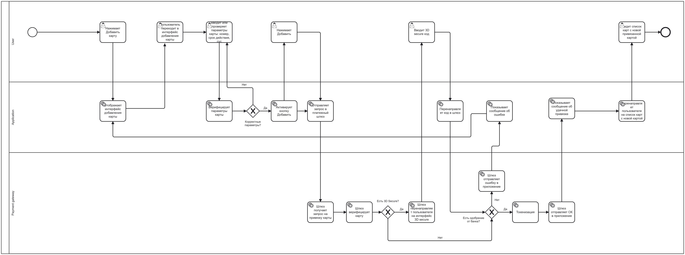

Техническое задание: Функционал привязки карты
1. Бизнес-видение
Необходимо добавить в приложение возможность привязки платежной карты для автоматической оплаты поездки, так как это:
- Гарантирует, что поездка будет оплачена пассажиром. Соответственно, резко повысит прибыль, так как количество «зайцев» уменьшится.
- Ускорит высадку пассажиров, т.к. оплата будет произведена автоматически и пассажир, как и водитель, не будет терять время, расплачиваясь наличными. Это приведет к росту выполненных заказов и повышению прибыли.
- Увеличит привлекательность такси для пользователей, что также повысит прибыль.
2. Пользовательские требования
- Пользователь должен иметь возможность зайти в раздел привязки карты для автоматической оплаты, нажав на опцию «Добавить карту» во вкладке «Способы оплаты».
- После нажатия опции «Добавить карту» Пользователю должен отображаться интерфейс, который позволяет вручную ввести:
- Номер карты
- Срок действия
- CVC/CVV код
- Пользователь должен иметь возможность видеть, что данные введены правильно.
- Считывание через NFC: Пользователь должен иметь возможность считать параметры карты через NFC.
- Реализация: Добавить соответствующую иконку на интерфейс с пояснением о том, что необходимо поднести карту с NFC к телефону для автоматического распознавания. В этом случае поля «Номер карты» и «Срок действия» должны заполниться автоматически. "CVC/CVV" код всегда вводится Пользователем вручную.
- Считывание через камеру: Пользователь должен иметь возможность считать параметры карты через камеру.
- Реализация: Добавить соответствующую иконку на интерфейс, которая бы включала камеру и автоматически считывала номер карты и срок действия, помещая их в соответствующие поля. "CVC/CVV" код всегда вводится Пользователем вручную.
- После ввода параметров карты и при условии, что валидация параметров прошла успешно, должна активироваться кнопка «Добавить». В случае ошибки кнопка не должна активироваться.
- Пользователь должен нажать «Добавить», чтобы запустить процесс привязки карты.
- Необходимо показать интерфейс 3D Secure, чтобы пользователь имел возможность ввести код проверки, если этот метод защиты используется банком.
- После успешной привязки карты пользователь должен быть перенаправлен на экран со списком карт, где отображается новая добавленная карта. Необходимо показать уведомление, что карта успешно добавлена.
- В случае ошибки привязки пользователь должен остаться на интерфейсе добавления карты. Необходимо показать нотификацию об ошибке и предложить пользователю попробовать привязать карту еще раз.
3. Функциональные требования
- Приложение должно позволять Пользователю войти в интерфейс добавления карты через опцию «Добавить карту».
- Приложение должно позволять Пользователю ввести данные карты (номер, срок действия, CVC) в интерфейсе добавления карты вручную, через NFC или камеру. CVC/СVV - строго вручную.
- Валидация данных: Приложение должно валидировать введенные данные по следующим правилам:
- Номер карты: длина от 16 до 19 цифр, соответствие алгоритму Луна
- Срок действия: формат
ММ/ГГ, дата не должна быть меньше текущей - CVC/CVV: ровно 3 цифры
- Обработка ошибок: При невалидном значении кнопка «Добавить» блокируется, а некорректное поле подсвечивается красным цветом
- Приложение не должно разрешать добавлять карту с некорректно введенными данными — необходимо блокировать функционал добавления в этом случае.
- Приложение должно разрешать добавлять карту с корректно введенными данными — необходимо активировать кнопку добавления карты.
- При запросе на добавление карты, исходя из введенных параметров, приложение должно отправлять запрос на привязку в банк-эквайер / банк-эмитент, к которому относится карта.
- Приложение должно получить ответ от банка после запроса и активировать интерфейс 3D Secure для привязки карты, если это требуется банком.
- Приложение должно ожидать положительный или отрицательный ответ банка на запрос о привязке карты.
- В случае положительного ответа от банка Приложение должно добавить карту в список привязанных карт для данного пользователя и отобразить обновленный список.
- В случае отрицательного ответа или отсутствия ответа Приложение должно нотифицировать пользователя о том, что привязка не удалась.
4. Нефункциональные требования
- Скорость работы интерфейса: Открытие страницы добавления карты не должно превышать 0.5 сек.
- Таймаут банковских операций: Ожидание ответа от банка не должно превышать 15 сек. Если время ожидания превышено, считается, что привязка не прошла, и приложение отображает ошибку. Рвем соединение и возвращаем 504 (Gateway timeout)
5. Архитектура процесса (BPMN)

4. Интеграционный контракт (API)
Для инициализации привязки карты Приложение выполняет запрос к Платежному шлюзу.
- Метод: POST
- Эндпоинт: /v1/bind_card
- Заголовки:
- Content-Type: application/json
- Authorization: Bearer [токен]
Тело запроса (JSON):
{
"user_id": "usr_77410",
"card_number": "4276444444444444",
"card_type": "VISA",
"expiry_month": "12",
"expiry_year": "2029",
"payment_token": "token"
}
- При коде
200(OK) приложение выводит: "Карта успешно добавлена."
Обработка ошибок шлюза:
- При коде
404(Не найдено) приложение выводит: "Не удалось привязать карту. Попробуйте попозже еще раз." - При коде
422(Нет денег/Ошибка банка) приложение выводит: "Не удалось привязать карту. Попробуйте попозже еще раз." - При коде
500(Сбой шлюза) приложение выводит: "Не удалось привязать карту. Попробуйте попозже еще раз." - При коде
504(Gateway timeout) приложение выводит: "Не удалось привязать карту. Попробуйте попозже еще раз."
5. Структура хранения данных
Данные о картах пользователей сохраняются в реляционную БД.
-
Таблица
usersсодержит данные клиентов- id (string) — Primary Key
- first_name (string) - имя
- last_name (string) - фамилия
- phone (string) - номер телефона
-
Таблица
cardsсодержит данные карт- id (integer) - id карты в базе
- user_id (string) - Foreign key, связывает карту с таблицей
users - card_number (string) - замаскированный номер карты